ALONE WORLD
哥伦拜恩高中：1999
Dylan和Eric迫切希望被世界记住。他们想传递一个无人能够忽视的信息。更进一步，他们想“点燃一场革命”——激励那些和他们感受相同的人，对枪手眼中极不公平的现状发起自己的反抗。
他们没有炸毁学校，但他们确实赤裸裸地揭示了一个困扰世界各地学校几代人的问题：对许多学生而言，无论出身何种背景，学校往往是一个充满暴力的不快乐之地。社交操控和同伴欺凌——无论暴力还是非暴力——仍在继续，但哥伦拜恩高中枪击案之后，情况已经改变，并且仍在继续改变。只是令人遗憾的是，为了让世界认识到变革的时刻已经到来，竟要同时发生这么多糟糕的事。
↗ 访问档案站 (A Columbine Site)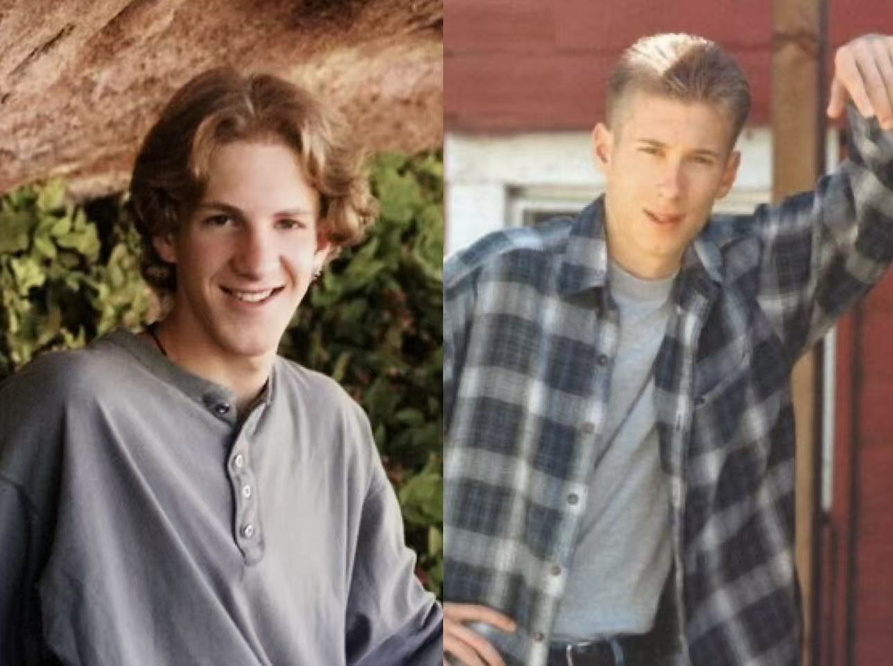
教师Dave Sanders身上流着血，带着几名学生进了这间科学教室；大约三小时后，他因失血过多死亡。
体育馆：一名管理人员把上体育课的学生转移到器材室。学生们在房间里待了大约15分钟，随后被转移到室外。
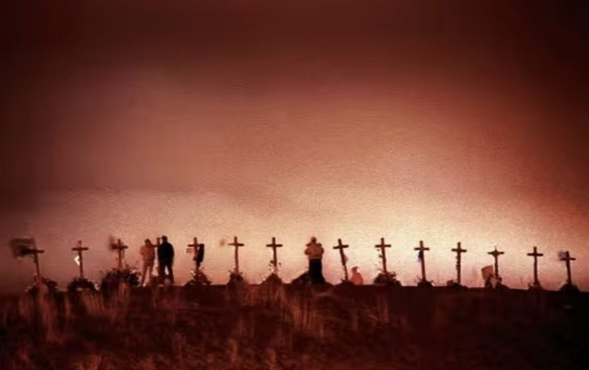
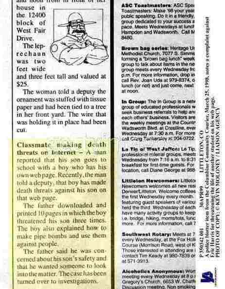
桑迪胡克小学：2012
Adam Lanza没有留下宣言，也没有向任何人解释他为什么选择桑迪胡克小学。官方报告后来确认，他对大规模屠杀有“obsession”，尤其痴迷1999年的哥伦拜恩枪击案，并保存着一份记录历次枪击事件的电子表格。他在家中用一把.22口径步枪朝母亲Nancy Lanza的头部开了四枪，然后驾驶她的车前往自己曾就读过的这所小学。报告无法确定动机，只指出他存在“显著的心理健康问题”，但这些问题与枪击之间是否存在因果关系，结论是“未知”。桑迪胡克之后，康涅狄格州在2013年通过了本州的攻击性武器禁令，联邦层面的背景调查扩展法案则在参议院未能通过。
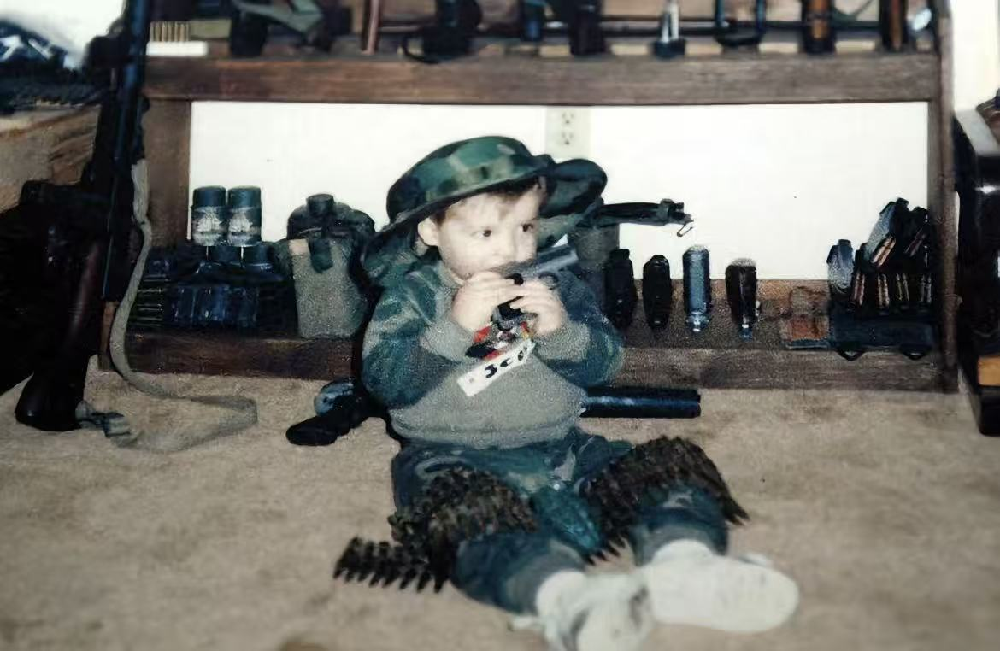
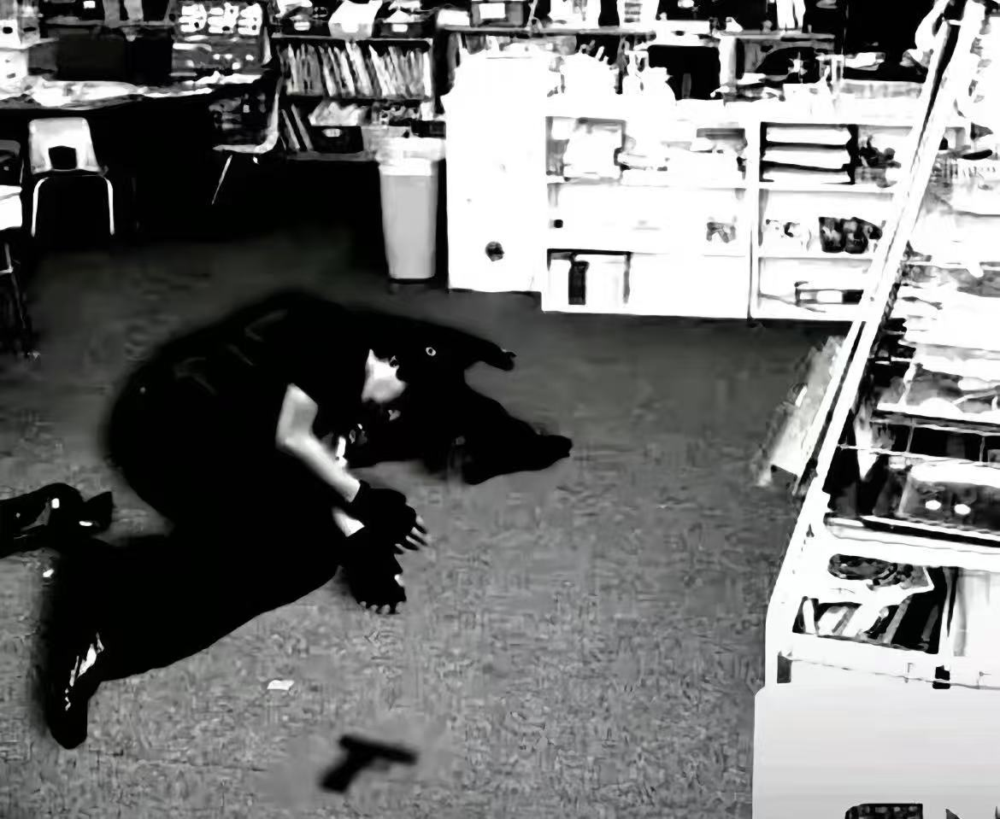
格拉茨校园枪击案：2025
Artur的动机在调查结论中指向一种特定的心理机制：长期痴迷于过往的校园枪击案，并逐渐从研究、认同作案者，发展到从中获得愉悦，最终付诸实施。他在告别信中把自己描述为霸凌的受害者，但检察官指出这封信并未解释动机。一个在事后被反复提及的细节是：他此前接受奥地利联邦军队心理评估时已被判定为“不适合服役”，但这一信息因数据保护规则未能进入枪支管理部门的视野。
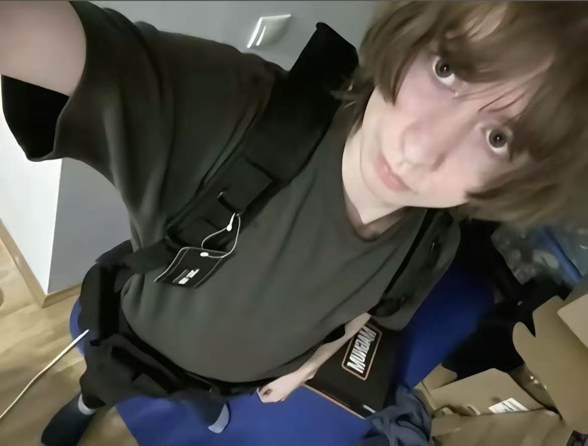
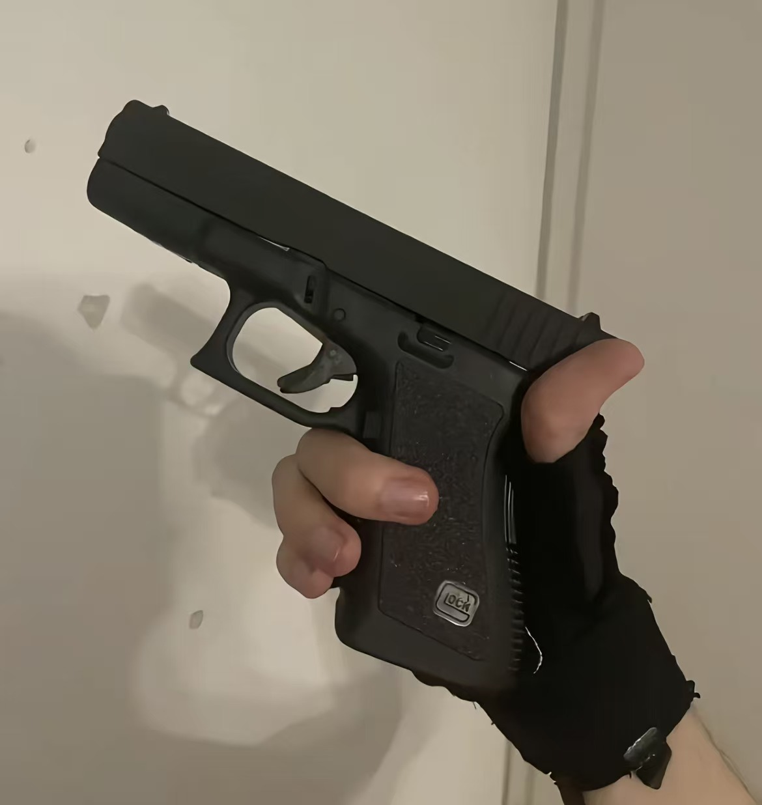
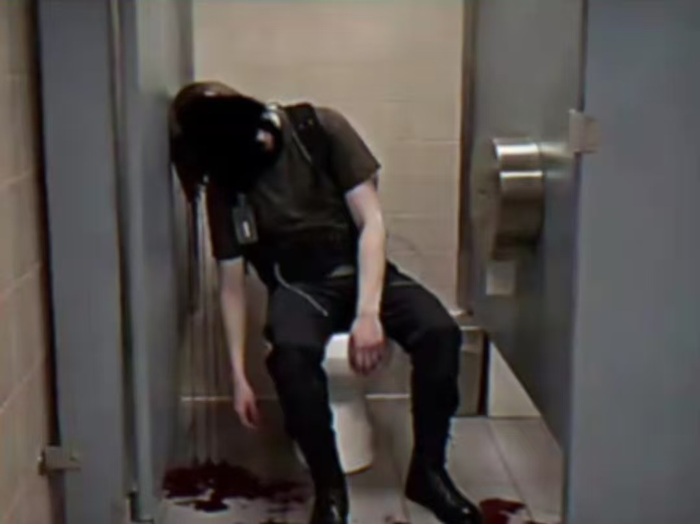
弗吉尼亚理工大学枪击案：2007
Seung-Hui Cho（赵承熙）在案发前已被多方注意到存在严重心理问题。2005年，两名女学生向校方举报他发送骚扰信息，弗吉尼亚州一名地方法官曾裁定他“对自己或他人构成危险”，要求他接受门诊治疗。但这项裁定只适用于一次临时拘留，他随后在一家社区心理健康中心接受了短暂评估，被允许以门诊身份离开，没有进入长期强制治疗程序。他通过合法途径购买了两支手枪，其中一支的购买背景调查因他未被列入任何禁止持枪名单而顺利通过。弗吉尼亚理工大学事后成立的审查小组认定，正是“资源缺失”和“信息未共享”使他从多个环节的缝隙中漏过。
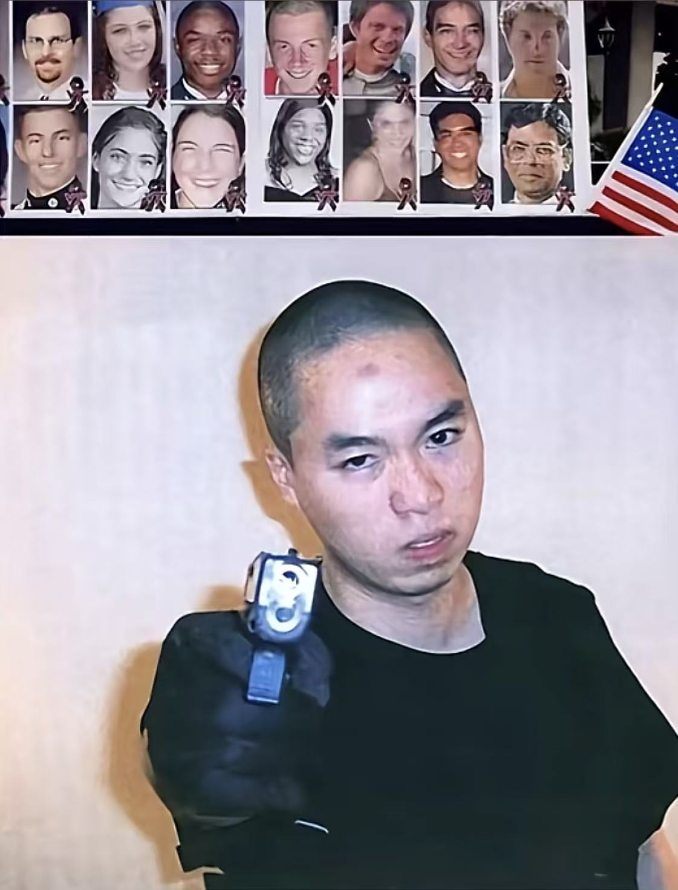
丰盛生命基督学校：2024
Natalie Rupnow，15岁，该校学生，使用的是一把9毫米Glock手枪和一把.22口径手枪。两支枪都由她的父亲Jeffrey Rupnow合法购买，其中一支是作为圣诞礼物送给她的。女性校园枪手在美国极为罕见，自1999年哥伦拜恩事件以来占比约4%。事后追责的方向也因此偏离了立法层面，转向了家长：Jeffrey Rupnow因向未成年人提供危险武器面临重罪指控，而非威斯康星州通过了新的枪支限制。
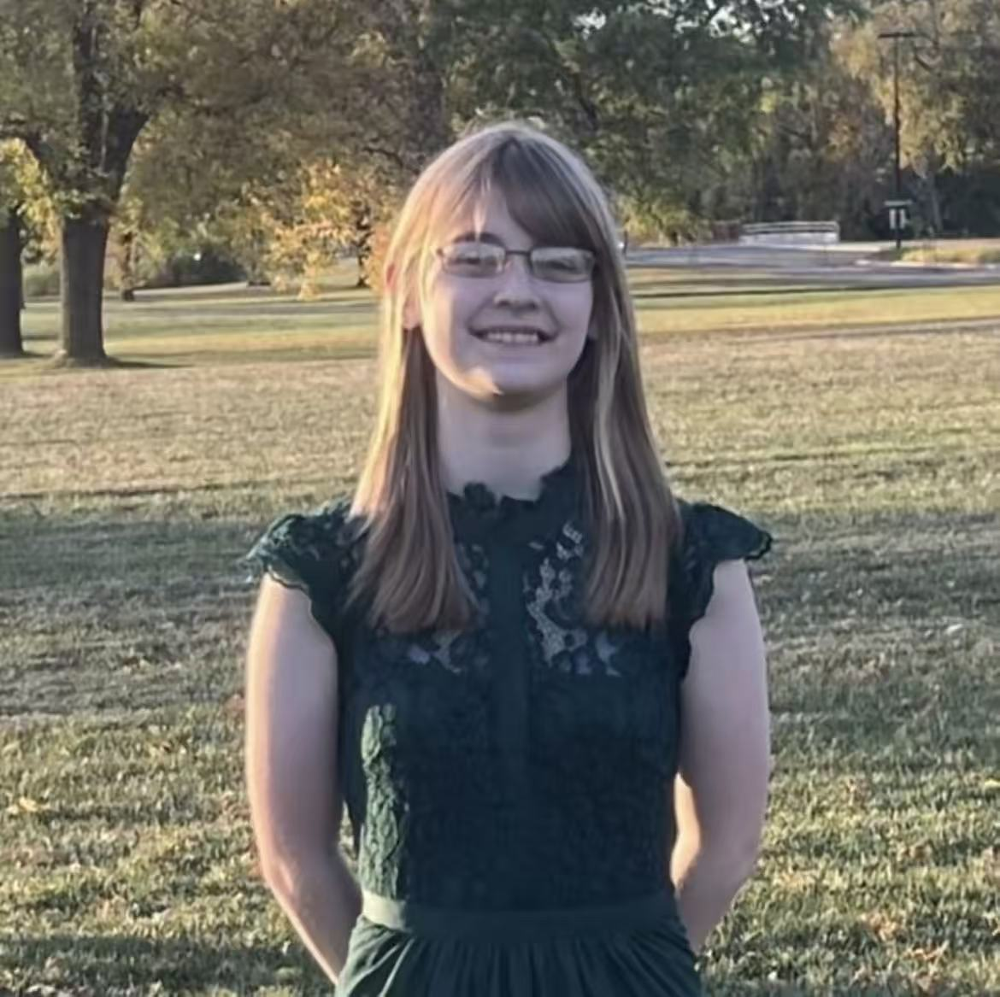
埃尔帕索枪击案：2019
Patrick Crusius 驱车超过1000公里，从达拉斯附近的家前往埃尔帕索，目的明确：针对当地的拉丁裔人群。他在行动前于网络发布了一份宣言，核心是“大置换”理论，声称西语裔移民正在“入侵”和“替代”美国白人。他将2019年3月新西兰克赖斯特彻奇清真寺枪击案中的枪手视为“榜样”，并表示支持。埃尔帕索80%的居民为拉丁裔，距美墨边境不到20公里，这个地点本身就是他宣言的注脚。联邦调查局将此案作为国内恐怖主义行为调查，司法部将其定性为仇恨犯罪。
暖武里府校园枪击案：2026
作案用的手枪登记在枪手祖父名下，是一把9毫米手枪，合法持有。枪手14岁，与祖父母同住，父母在他两岁时分离。他过去一两年间开始对枪支产生兴趣，通过社交媒体学习如何使用枪械，没有证据显示他去过射击场或接受过正式训练。更早之前，他曾把一把网上购买的BB枪带到学校，被老师没收；他还曾把刀放在书包里带进校园。泰国法律允许合资格公民在政府批准下持有枪支，合法登记的枪支应存放在家中。这把手枪从祖父的存放处到了孙子手中，然后被带出那栋房子，乘巴士去了18公里外的学校。
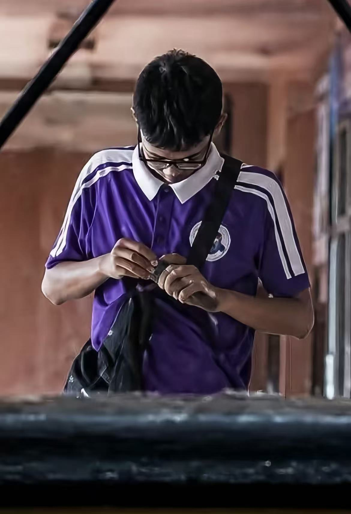
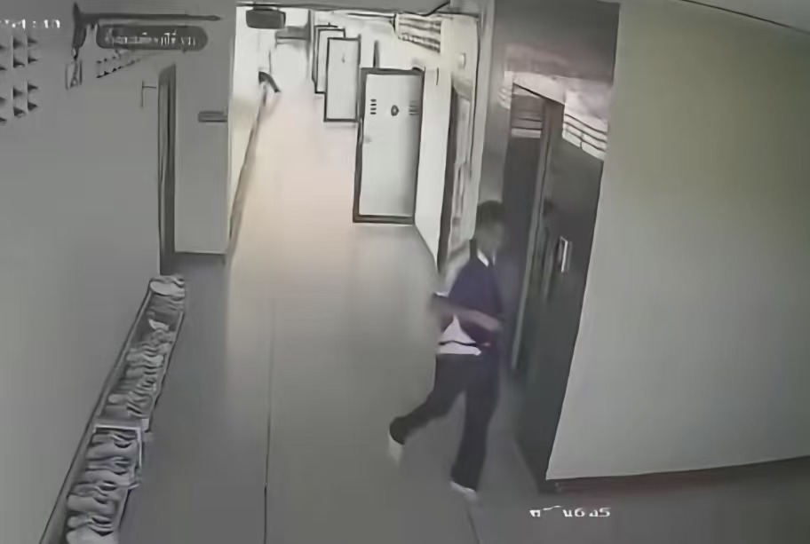